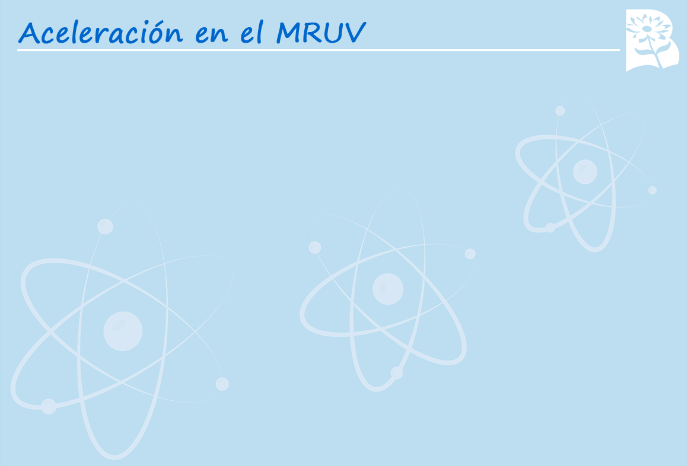

Seleccionar la respuesta correcta.
Una motocicleta se mueve partiendo del reposo, con una aceleración uniformemente, alcanzando una velocidad de 80 km/h en 5 segundos.
1- Calcula la aceleración de la motocicleta.
2- Halla la distancia que recorre en los primeros 15 s.
a=4,44 m/s2 X= 499,5 m
a=8,44 m/s2 X= 49,95 m
a=5,44 m/s2 X= 9,999 m